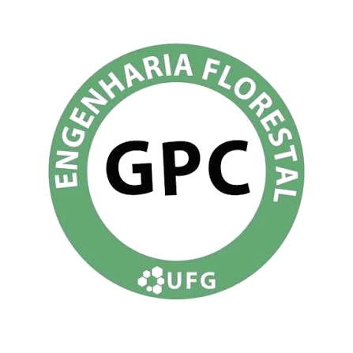

WebGIS Interativo de Monitoramento da Dinâmica de Uso e Cobertura da Terra em APPs (1985 – 2025)
Análise multitemporal das Áreas de Preservação Permanente (1985, 2012, 2025) com delimitação vetorial legal conforme o Código Florestal.
Visualização contextual de toda a área da bacia hidrográfica (~198 km²) para compreender a matriz regional de ocupação da terra.
As cores do uso do solo seguem estritamente a padronização oficial salva em cod_2015.qml.
cod_2015.qml
Imagens orbitais e relevo: 1. Google Híbrido, 2. Esri Imagem de Satélite e 3. Esri Topográfico.
Alterne instantaneamente o tema de iluminação da interface no botão do cabeçalho com persistência automática.
Calcule extensões lineares e polígonos em hectares e km² com projeção esferoidal precisa via Turf.js.
Analise a evolução das classes de cobertura vegetal e antropização através de gráficos e tabelas.